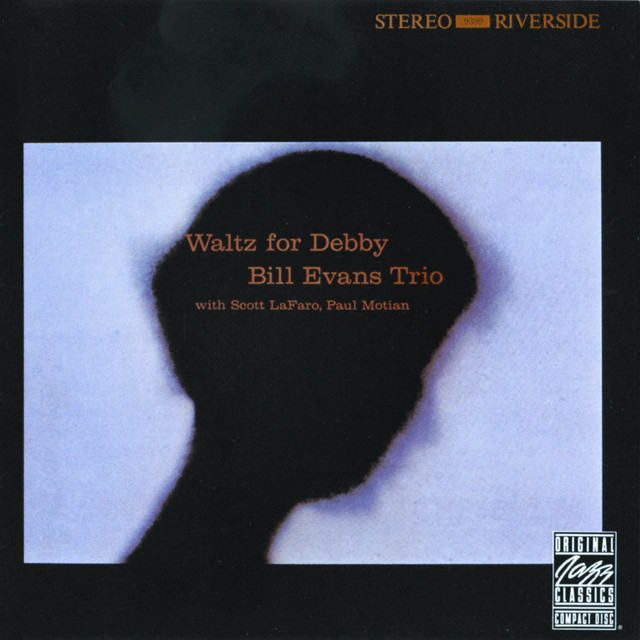

boombox-489837
MFG.D 2024'12
[Generation]:1960s-70s
⬊⬊⬊⬊


info
Bill Evans Trio
1962
 領取你的專屬磁片
領取你的專屬磁片
Bill Evans（本名為 William John
Evans，1929年8月16日—1980年9月15日），為美國20世紀著名的爵士樂鋼琴家，他在印象派和聲的使用、傳統爵士樂曲目的創造性詮釋，以及他最著名的有如歌曲般節奏的獨立旋律線，影響了一整個世代的爵士鋼琴家。
爵士樂歷史上鋼琴三重奏的典範—「Bill Evans Trio」，由Bill
Evans領軍，在1959到1961年間，與鼓手Paul Motian，以及貝斯手Scott
Lafaro，用嚴謹的理性去包裝浪漫的理性，用最簡單的鋼琴、貝斯和鼓，構築出一個既簡單卻又有無限發揮空間、充滿了絕佳互動性的一種爵士樂型態。